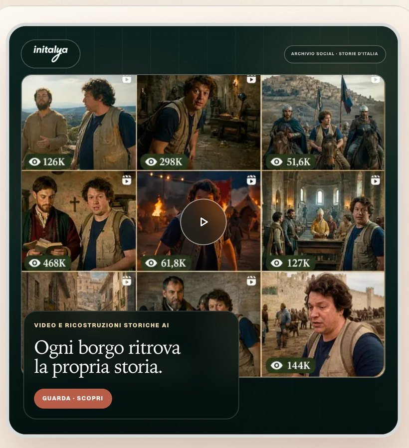
Canale social Initalya
La storia torna viva.
Ricostruzioni storiche create con l’AI fanno scoprire luoghi, personaggi e identità dei borghi italiani.
Turismo esperienziale · Italia
L’assistente AI multilingue che trasforma ogni viaggio in un’esperienza autentica.
Una web app nazionale che ascolta, consiglia e costruisce itinerari personali tra le esperienze autentiche dei territori italiani.
01 Due anime, un unico progetto
Initalya non sarà soltanto una piattaforma di servizi per il turista: avrà anche un canale social dedicato alle ricostruzioni storiche realizzate con l’AI, per raccontare ogni borgo e territorio italiano.

Ricostruzioni storiche create con l’AI fanno scoprire luoghi, personaggi e identità dei borghi italiani.
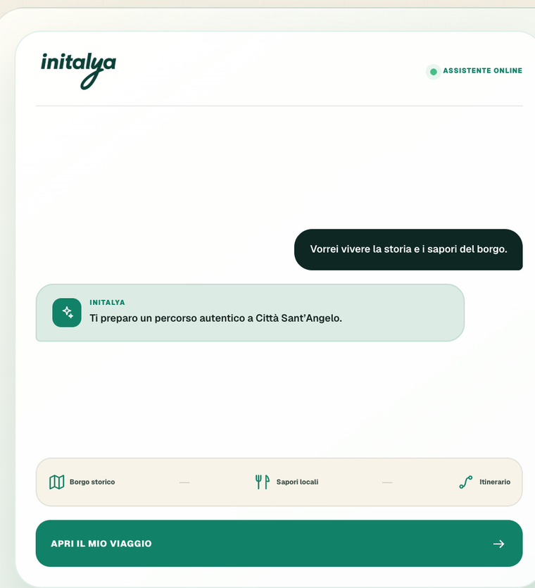
L’assistente virtuale multilingue trasforma l’interesse in itinerari, servizi ed esperienze autentiche.
02 Il primo territorio pilota
Qui Initalya valida il modello: identità locale, esperienze autentiche e un assistente capace di accompagnare ogni viaggiatore nella propria lingua.
Una città ricca di storia, gusto, paesaggi e persone: il luogo ideale da cui far partire il progetto.
L’assistente comprende il viaggiatore, propone esperienze autentiche e costruisce un viaggio personale.
03 Dal desiderio all’assistente
Il viaggiatore scrive nella propria lingua ciò che desidera vivere. L’assistente Initalya comprende, propone esperienze autentiche e costruisce il percorso.
✓ Intelligenza artificiale, identità locale. La tecnologia orienta; contenuti ed esperienze vengono validati con il territorio.
04 L’esperienza utente
L’assistente multilingue collega i desideri del viaggiatore alle esperienze autentiche di Città Sant’Angelo, fino a un’azione concreta verso il territorio.
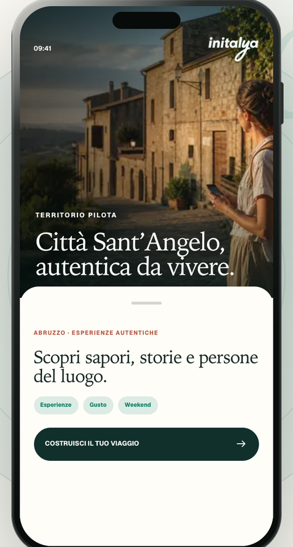
Initalya apre Città Sant’Angelo attraverso esperienze autentiche, già coerenti con gli interessi del viaggiatore.
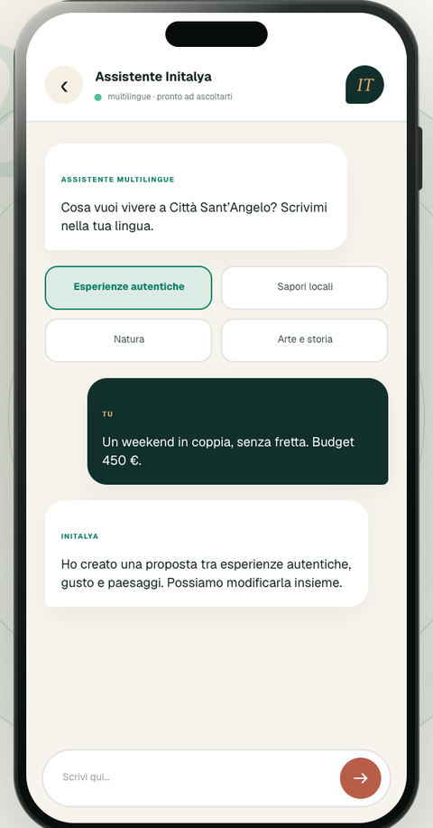
L’assistente raccoglie desideri, tempo, budget e compagnia attraverso una conversazione semplice e multilingue.
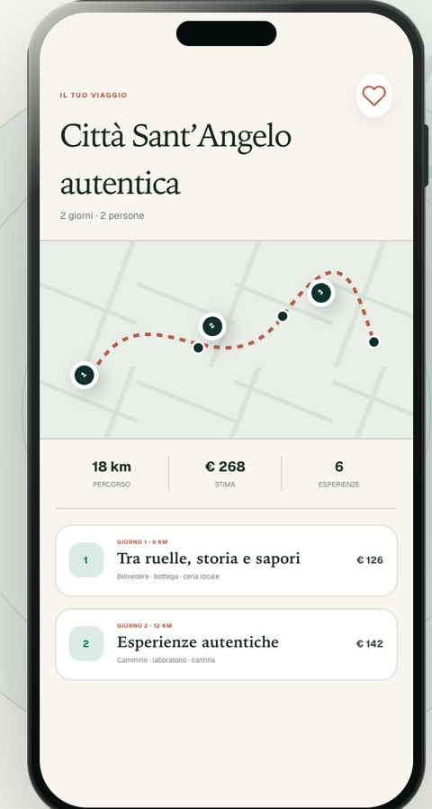
La conversazione diventa tappe, tempi, mappa e alternative, mantenendo al centro le esperienze autentiche.
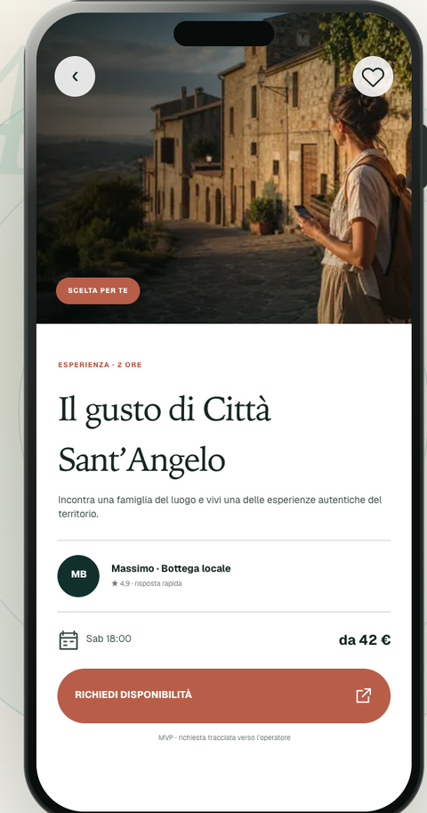
Esperienze, tavoli, alloggi ed eventi entrano nel viaggio con un’azione tracciabile verso l’operatore.
05 Il prodotto, schermata per schermata
Il pilota di Città Sant’Angelo mostra il primo ecosistema locale; la stessa esperienza è pensata per estendersi progressivamente in tutta Italia.
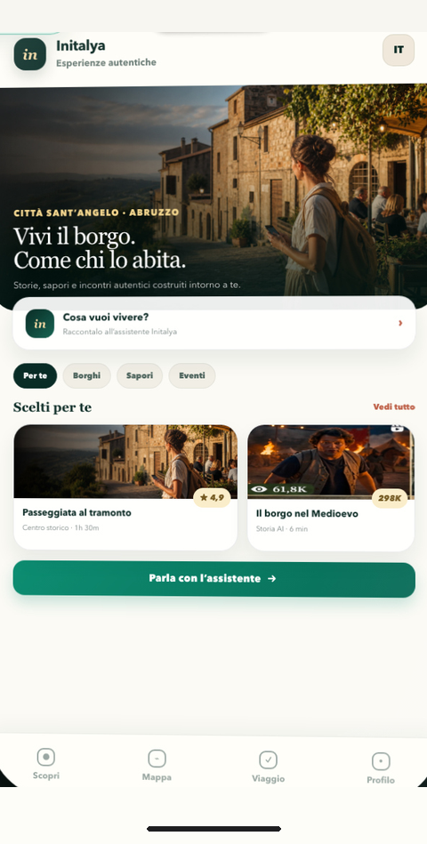
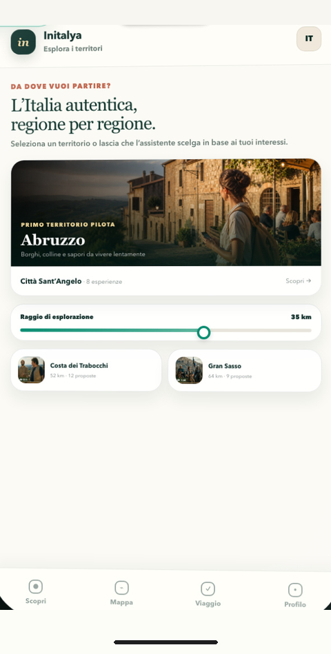
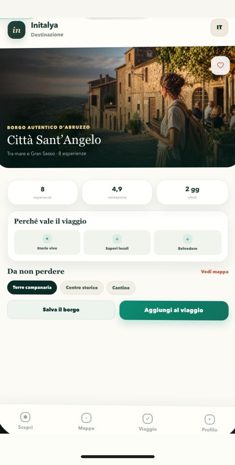
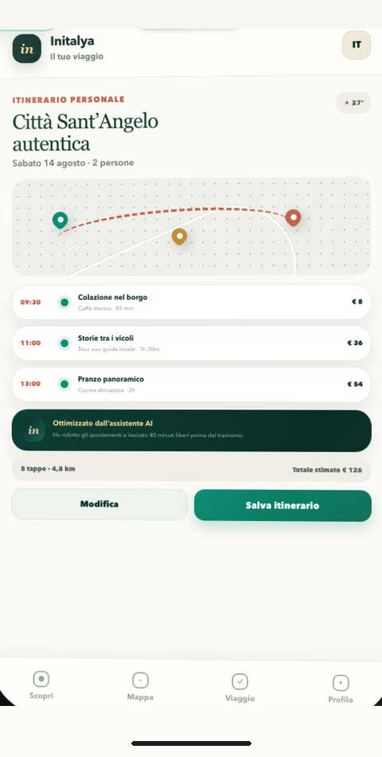
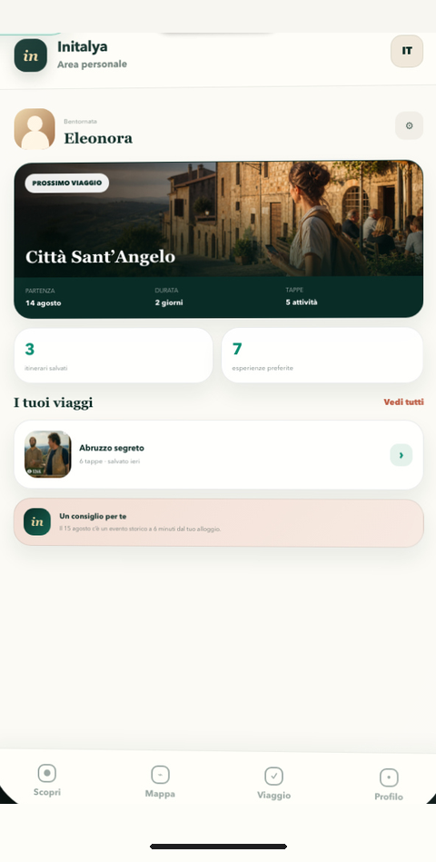
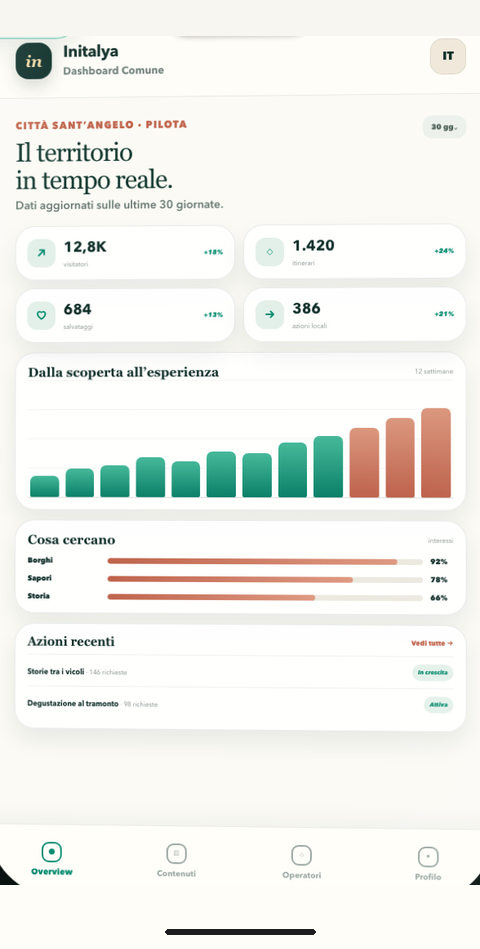
← Trascina per esplorare le schermate →
06 Le esperienze autentiche
Città Sant’Angelo è il primo catalogo locale di un modello pensato per collegare viaggiatori e operatori in tutta Italia.
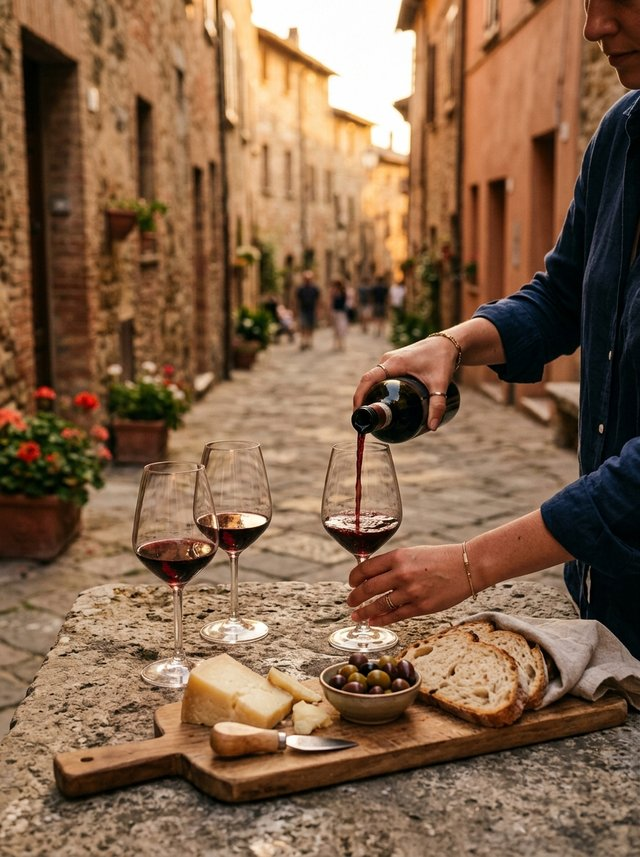
Attività, laboratori e visite diventano tappe vive dell’itinerario.
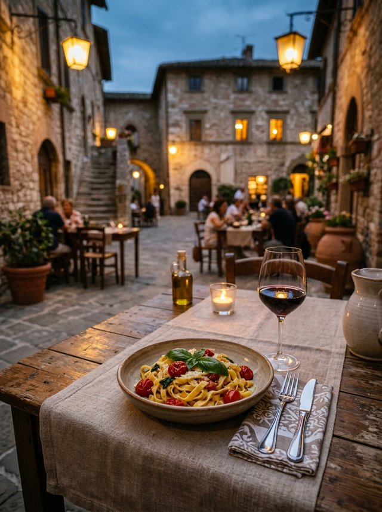
La proposta gastronomica incontra momento, zona e preferenze del viaggio.
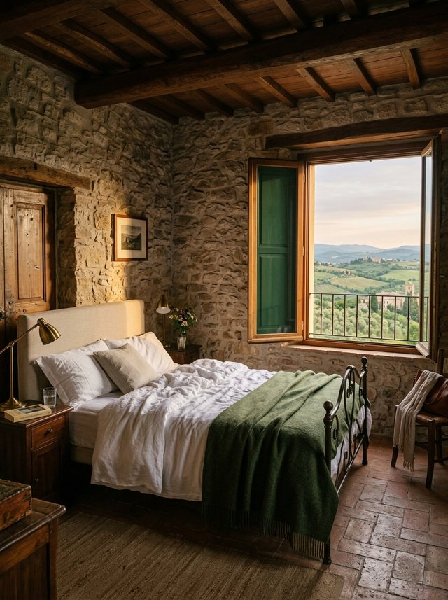
Ospitalità diffusa e strutture coerenti con il percorso suggerito.
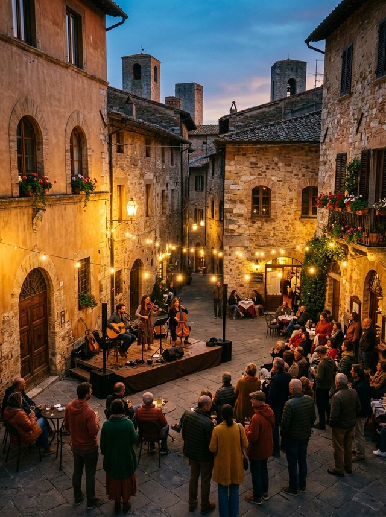
Programmazione locale e occasioni da vivere nel momento giusto.
07 Canale social Initalya
Un esempio reale dal canale: la ricostruzione storica AI dedicata ai borghi italiani, girata come un racconto in prima persona tra passato e presente.
08 Domande frequenti
La web app è in sviluppo e debutta con il territorio pilota di Città Sant’Angelo, per poi estendersi progressivamente regione per regione. Il canale social di Initalya, con i video e le ricostruzioni storiche realizzate con l’AI, sarà attivo a breve.
L’assistente è multilingue: scrivi nella tua lingua e lui comprende, consiglia e ti risponde nella stessa lingua. È pensato per i viaggiatori di tutto il mondo, non solo per chi parla italiano.
Attraverso una conversazione semplice raccoglie interessi, tempo a disposizione, compagnia e budget. Poi propone esperienze autentiche del territorio e le organizza in un itinerario con tappe, tempi e costi, che puoi modificare continuando a conversare.
Esperienze, ristoranti, alloggi ed eventi entrano nel catalogo territorio per territorio, a partire dal pilota di Città Sant’Angelo. Le richieste dei viaggiatori arrivano agli operatori in modo diretto e tracciato.
Una dashboard territoriale con interessi, itinerari e azioni generate verso gli operatori locali: dati concreti per capire cosa cercano i viaggiatori e promuovere il territorio. Il modello nasce con Città Sant’Angelo ed è pensato per essere replicato in tutta Italia.
No. Initalya non è una piattaforma generalista di informazioni: è un ecosistema su misura per il turista e il cittadino, dove l’AI è il motore, il territorio è il patrimonio e la rete di operatori è il vantaggio competitivo.
Initalya non è una piattaforma generalista di informazioni, ma un ecosistema su misura per il turista e il cittadino.